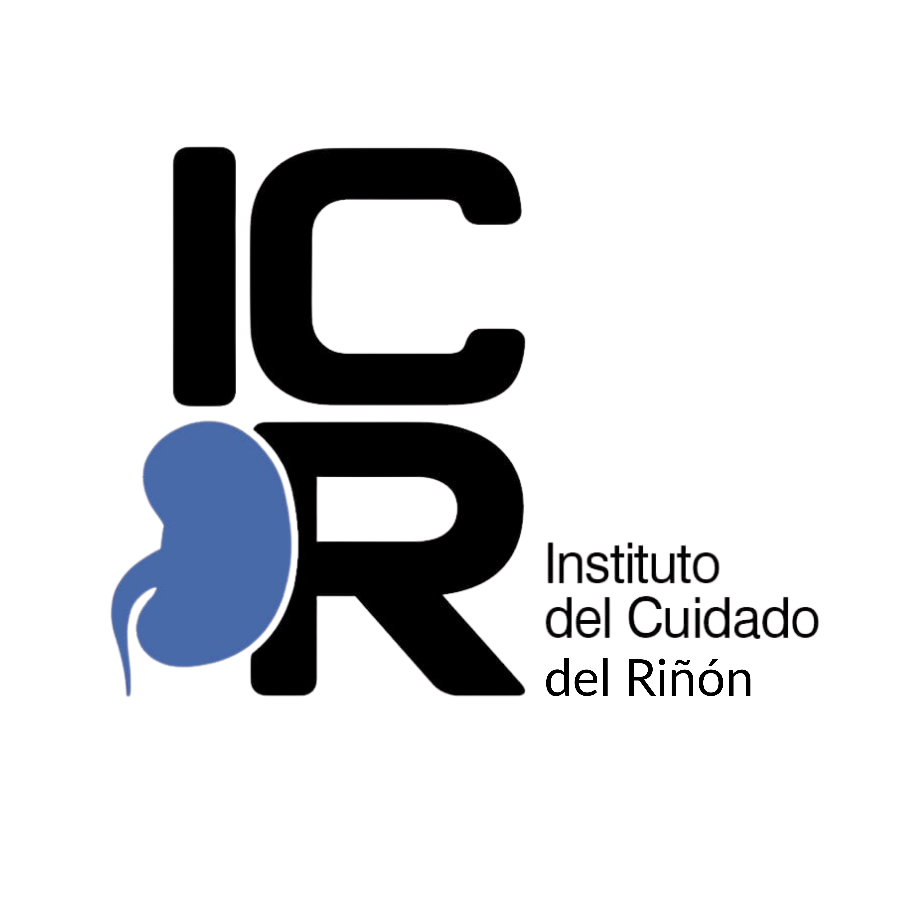

Dr. Gonzalo Di Bernardo
Nefrólogo
Solicitar Turno
379 453-1637

Atención médica nefrológica especializada
Av. 3 de Abril 636 — Ciudad de Corrientes
Indicaciones para su turno
Al comunicarse por WhatsApp, indique su nombre completo, motivo de consulta y cobertura médica.